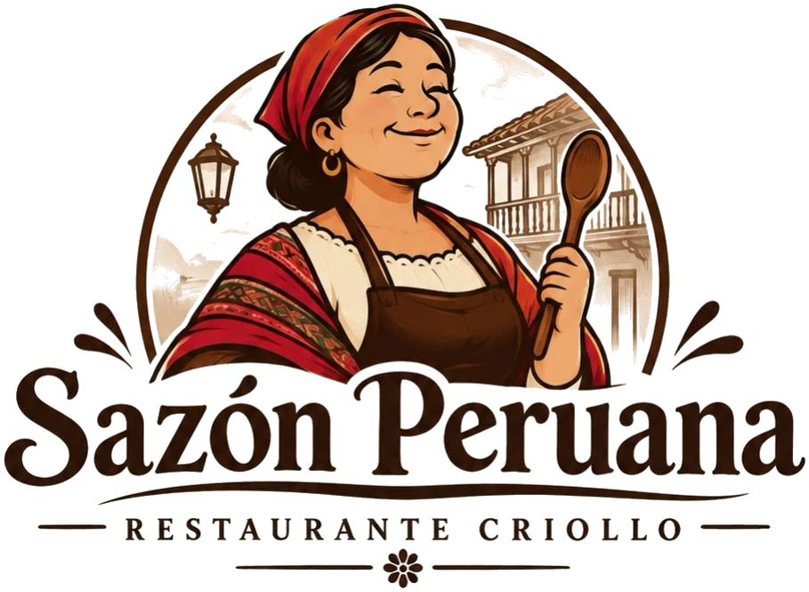
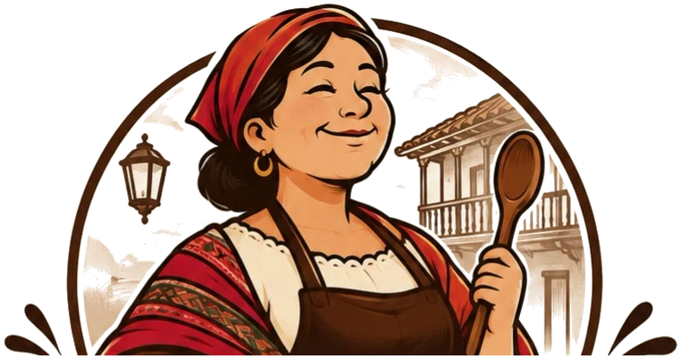
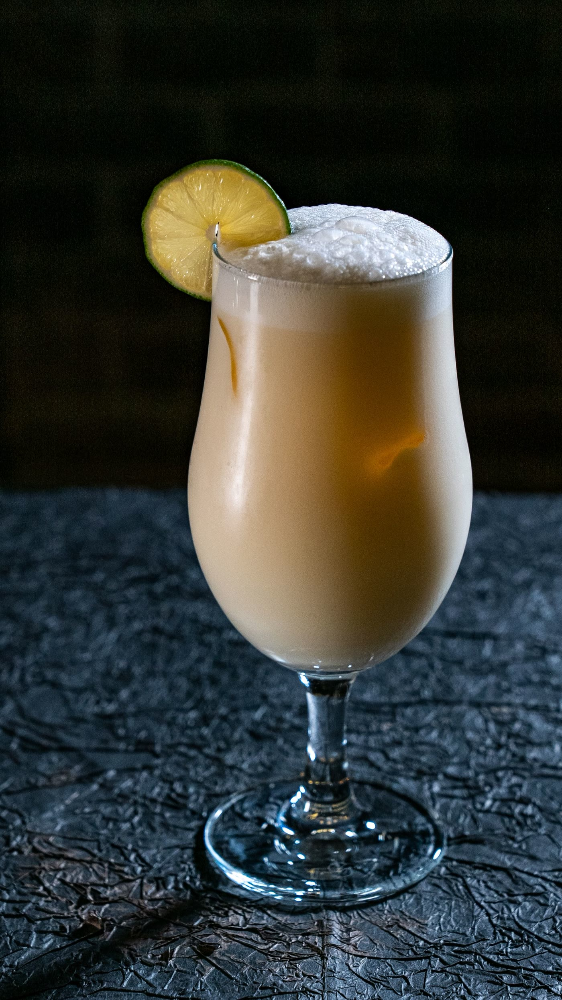

Barranco · Lima — Cocina criolla con sabor a casa
Papa amarilla bañada en crema de ají amarillo y queso fresco, con huevo y aceituna de botija.
Masa de papa amarilla con limón y ají, rellena de pollo, palta y mayonesa casera.
Papa sancochada en salsa de huacatay, maní y ají mirasol, con huevo y aceituna.
Brochetas a la parrilla con papa dorada, choclo desgranado y ají de la casa.
Mejillones con sarsa de cebolla, tomate, choclo, rocoto y limón.
Masa de zapallo y camote, fritos al momento, con miel de chancaca.
Manjar blanco con merengue al oporto y canela.
Picarones y suspiro a la limeña para compartir.
Arroz con leche y mazamorra morada, mitad y mitad.
Papa seca guisada con cerdo, maní y ají panca, junto a tallarines en aderezo de albahaca.
Gallina deshilachada en crema de ají amarillo y pecanas, con papa, huevo, aceituna y arroz.
Lomo fino al wok con cebolla, tomate y ají amarillo, flambeado al sillao. Con papas fritas y arroz.
Cabrito tierno guisado en culantro y chicha de jora, con frejoles canarios y arroz blanco.
Frejoles y arroz dorados a la sartén, con lomo saltado jugoso, huevo frito y plátano.
Arroz verde al culantro y cerveza negra, con pierna de pato confitada y sarsa criolla.
Guiso de mondongo con papa amarilla, ají amarillo y hierbabuena. Con arroz graneado.
Panceta crocante con camote frito, mote y sarsa criolla.
De nuestra barra
Bebidas

Pisco quebranta, limón, jarabe, clara de huevo y amargo de angostura.
Pisco acholado, ginger ale, limón y maracuyá fresco.
Pisco, jarabe de algarrobina, leche evaporada, yema y un toque de canela.
Nuestro pisco sour con aguaymanto fresco: dulce, ácido y muy peruano.
Pisco y vermouth rojo, bien frío y con cáscara de naranja.
Selección de bodegas peruanas. Pregunta por la recomendación del día.
Tinto o blanco, de bodegas del sur del país.
Rubia, roja o negra de cervecerías locales.
Maíz morado, piña, manzana y canela. Jarra S/ 25.
Limón, hierbabuena y hielo frappé.
Consulta las opciones disponibles.

“Cocinamos sin prisa, servimos con cariño:
que cada almuerzo se sienta como volver a casa.”